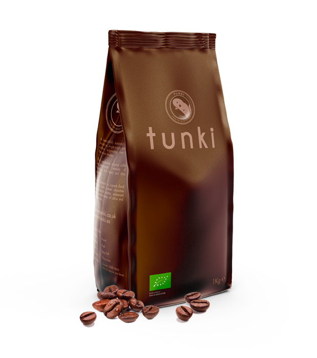

Tunki Coffee
Tunki Coffee: Este café es conocido por su sabor suave y equilibrado, con notas de chocolate y frutas. Tunki Coffee es cultivado en las alturas de la región de Puno, donde el clima y la tierra volcánica le brindan un carácter único. Cada taza de Tunki Coffee ofrece una experiencia sensorial excepcional, con una acidez equilibrada, un cuerpo suave y un retrogusto prolongado. Disfruta de este café premium que refleja la riqueza y calidad de los cafés peruanos.
Descubre la perfección en cada taza con Tunki Coffee. Este café de origen peruano es famoso por su sabor suave y equilibrado, con notas irresistibles de chocolate y frutas. Cultivado en las alturas de la mística región de Puno, Tunki Coffee es el resultado de años de tradición y cuidado en cada etapa de su producción. Cada grano es seleccionado a mano y tostado con maestría para brindarte una experiencia única en cada sorbo. Sumérgete en la riqueza de los aromas y sabores de Tunki Coffee y déjate cautivar por su calidad excepcional.